Recent work
Roblox Foundation AI2026
2025
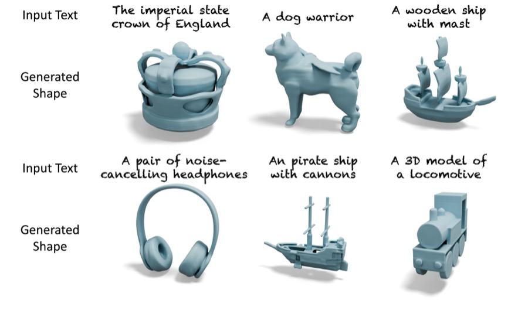
2024
Earlier publications
Berkeley & before2020
2019
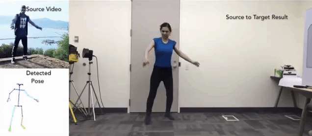
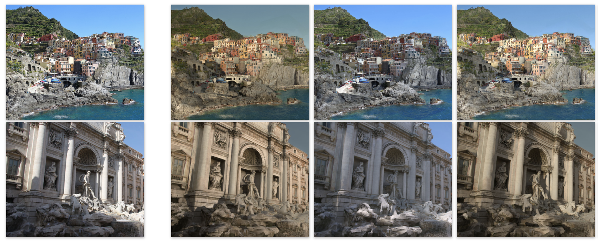
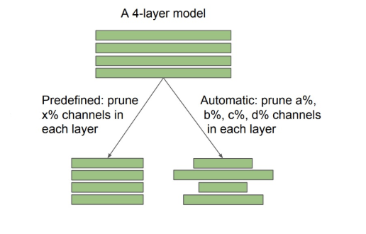
Rethinking the Value of Network Pruning
ICLR 2019 · Best Paper, NeurIPS 2018 CDNNRIA Workshop
2018
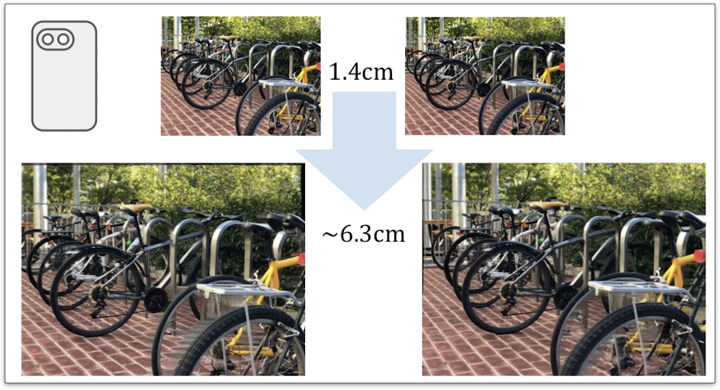
2017
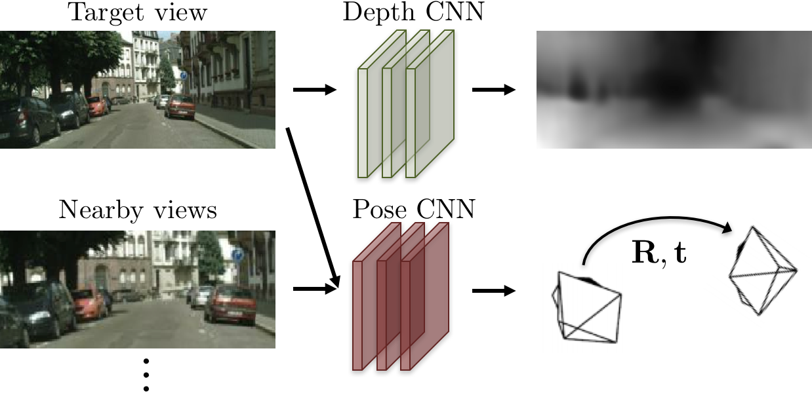
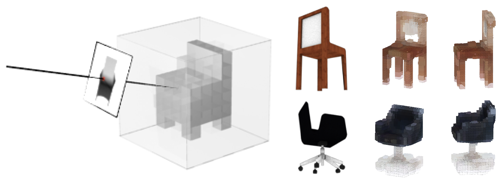
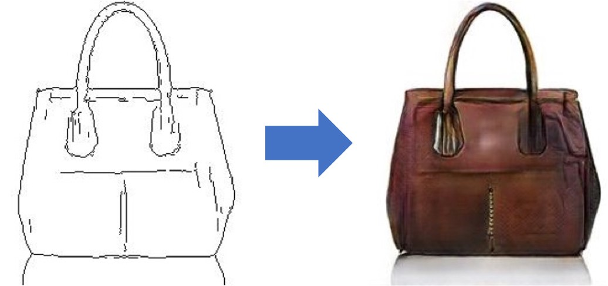
2016
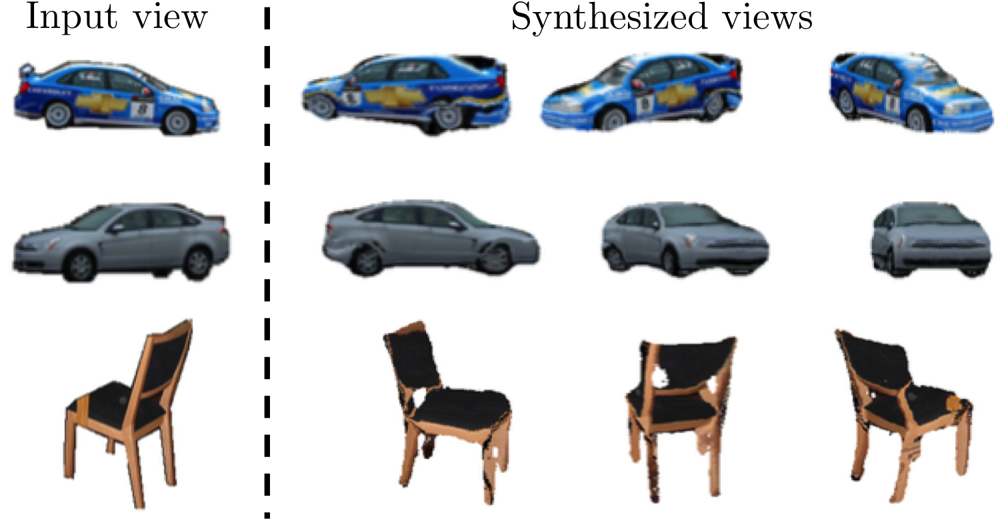
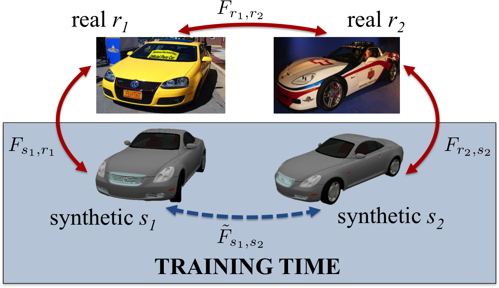
2015
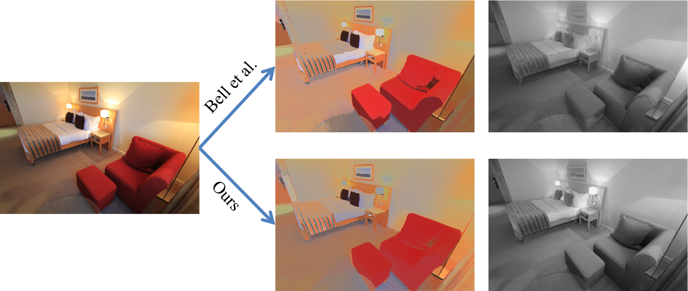
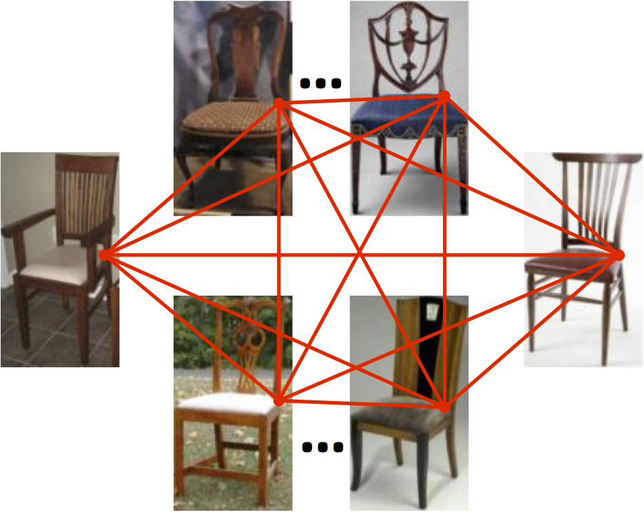
2012
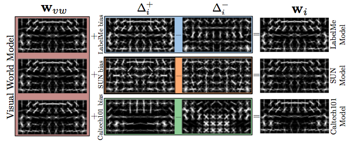
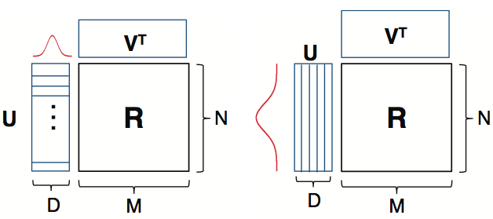